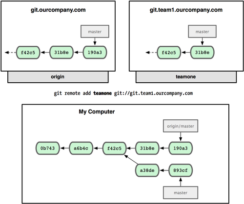

git going
Versionskontrolle im kommerziellen Umfeld
Achtung
Erst kam RCS, dann kam CVS. Subversion kam als CVS Nachfolger auf den Markt und nun steht git in den Startlöchern als neuer Platzhirsch. Aber hält es was es verspricht?
Subversion ist
zentralisierte Versionskontrolle
ein Server
viele Clients
etabliert am Markt
Subversion hat
Ein breites Spektrum an ergänzenden Werkzeugen wie :
TortoiseSVN
Trac / Redmine
Unterstützung in deiner IDE
Subversion hat
kommerziellen Support
etablierte Prozesse
eine große Community
ist Teil der Apache Foundation
Subversion hat Lücken bei
Branching
- keine direkte Verbindung zum Ursprung
- Mergen aus einem Branch verliert die Historie
- Ein Branch ist nur eine Kopie
Subversion hat Lücken bei
Tags
- sie sind keine Fixpunkte
- sie können modifiziert werden
- sie sind nur Ordner
Subversion hat Lücken bei
Dateioperationen
- Bob verschiebt eine Datei
- Alice ändert im alten Pfad
- ihr Commit schlägt fehl
Mergekonflikte sind alltäglich
Subversion macht Spaß
Offline arbeiten ist "praktisch"
Historie und Diffs sind nicht verfügbar
Branchen, taggen und committen fällt aus
der Source Tree wird "zugemüllt"
Entwickler müssen damit leben
Was nun?
“Subversion bezeichnet sich als CVS richtig umgesetzt: mit diesem Leitspruch kommt man nicht weit. Es gibt keinen Weg CVS richtig umzusetzen.” — Linus Torvalds, Mai 2007
Das!
“Git ist das Ergebnis aus allen vorangegangen Schmerzen durch Versionskontrolle. Es hilft die Leiden zu lindern.” — Ich :-)
Git ist
verteilte Versionskontrolle
viele Clients
Server sind optional
alles ist lokal
Operationen sind schnell
Du hast die Kontrolle
Git hat
echte Branches
sie haben eine Historie, Verbindung zur Quelle
Historie kann bei einem Merge erhalten bleiben
Mergen kann eine Referenz zum Branch behalten, muss aber nicht
Git hat
echte Tags
sie sind unveränderliche Fixpunkte
echte Hilfe beim Release Management
Git hat
Support für alle Dateioperationen
kopieren, löschen und verschieben
sind vollständig versioniert
sogar Dateiberechtigungen sind versioniert
kaum Mergekonflikte
Git hat
einen Stash
Zwischenablage für Work in Progress
verknüpft mit Historie
Git hat
die Staging Area
nichts geht direkt ins Repository
Vorschau des Commits
Ändern vor Commit
Weniger Oooops Momente!
Branching
ist billig
die Historie ist verfügbar und vollständig
bearbeiten, gruppieren und filtern von Änderungen
sauberer Code, saubere Änderungen
lokales und entferntes Arbeiten
Branching
agile Entwicklung wird gefördert
Entwickler haben die Kontrolle
alles geht, nichts muss
Tagging
erzeugt eindeutige Fixpunkte
geht auch mit Branches
hilft beim Release Prozess
Git bietet
Dir die volle Kontrolle
1-n Repositories
nutze ein zentrales Repository
arbeite mit Release Management
nutze deinen eigenen Workflow
Aber ...
Git ist nicht das Allheilmittel
Git ist kontrovers
disziplinierte Entwickler sind ein Muss
Warum umsteigen?
Es gibt bessere Gründe als "Git ist neu".
Agile Entwicklung fördern
Eigene Prozesse umsetzen
Historie ist wichtig
Administration
Du bist "reif" dafür.
Darum...
Bereite Dich gut vor.
Für Git musst Du umlernen (wollen): gitready.com
Experimente helfen: gitimmersion.com
Alles ist dokumentiert: git-scm.com
Git in der Praxis
Was Git für uns tun kann, sehen wir jetzt.
Git SVN
Initialisieren wir ein Subversion Repository mit Git:
git svn init -s http://svn.mycompany.com/svn/projectname
Dies erstellt ein leeres Git Repository, welches wir befüllen mit
git svn fetch
Nun ist das gesamte Repository lokal vorhanden.
Git SVN
Jeder Branch, jeder Tag ist lokal vorhanden:
git branch -a
Falls das geklonte Repository eine umfangreiche Historie hat, können wir es packen:
git repack -d
Im Anschluss daran ist die Historie komprimiert.
Git SVN
Arbeiten an einem neuen Feature:
git checkout -b neues_feature
git add path/to/new_file
git add path/to/edited_file
git add another/edited/file
git commit -m "commit message"
Fertig!
Git SVN
Das Feature in Subversion schieben:
git checkout master
git merge neues_feature
git svn rebase
git svn dcommit
Im Anschluss daran das Feature in Subversion.
Git Stash
Git bringt eine lokale Zwischenablage mit:
git add .
git stash save "probieren wir mal was"
git stash list
stash@{0}: WIP on feature1: b50788b... probieren wir mal was
git diff stash@{0}
diff --git a/TODO b/TODO
index b0ecaeb..4ca398c 100644
--- a/TODO
+++ b/TODO
@@ -1,4 +1,3 @@
[ ] Easier configuration of Maruka and blahtex directories [mdreid]
[ ] Accurate "related posts" calculator
-[ ] Autobuild
-[ ] Add more awesome.
+[ ] Autobuild
\ No newline at end of file
Die Zwischenablage ist privat.
Git Stash
git stash apply stash@{1}
git stash pop
git stash drop stash@{2}
git stash clear
Git Revert or not?
git checkout path/to/file
git checkout -f
git reset --HARD
git revert commit-id
Git aufräumen
git clean -n -d
git clean -n -f
git clean -n -x
Git Status
git status
git reset -- path/file/name
Git wer war es denn?
git blame path/to/file
Git Tags
git tag -a v1.0.0 -m "Creating the first official version."
git show v1.0.0
git describe --tags
git push --tags
Git Remotes
git remote
git remote add origin git@github.com/danielsreichenbach/presentations.git
git remote rm origin
git remote show origin
Git Pushing and Pulling
git push origin master
git pull origin master
git push origin newfeature
git push origin :newfeature
Git Branches
Branches können lokal und/oder Remote sein.
git branch -r
git branch -a
git branch --track feature1 origin/master
git branch --no-track feature2 origin/master
Git Branches und Merges
git checkout -b fixes
vim lib/daniel/mpq.rb
git commit -am "my message"
git checkout master
git merge fixes
Git Branches und Rebase
git checkout -b fixes
vim lib/daniel/mpq.rb
git commit -am "my message"
git checkout master
git rebase fixes
Git Branch Modelle

Git Branch Modelle

Git Branch Modelle

Git Branch Modelle

Git Branch Modelle

Git Branch Modelle
Git: woher kommen Remotes?
- Dateisystem
- Server (ssh / http(s)
Git: wozu Remotes?
Remotes ermöglichen erst die Zusammenarbeit im Team.
Mit Remotes legen wir Workflows fest und kontrollieren Zugang und Regeln.